REJI
JPYC決済 スタッフ運用マニュアル
お会計・お客様対応・困ったとき・閉店作業
このマニュアルを読めば、JPYCでのお会計から、お客様への案内、困ったときの対応、閉店作業まで、ひとりでできるようになります。
Rejiは、紹介ページ（トップページ）の「Rejiを開く」から、登録なしで使い始められます。はじめての方は、第1章〜第4章と第7章を先に読んでください。最後のページの「クイックリファレンス」は、印刷してレジの横に置いておくと便利です。
対象店舗スタッフ、店長・管理者（第10章〜第11章）
版0.1.2（Reji v0.1.2 対応） 2026年10月
注意画面の見た目は、お使いの端末や設定によって少し異なる場合があります。
目次
- 1Rejiとはしくみと、スタッフが覚えること
- 2開店前の準備チェックリスト
- 3画面の見かたレジ画面の各部
- 4基本のお会計商品を選んでから完了まで
- 5テンキーで金額を入力するメニューにない商品・税率
- 6お客様への案内接客のことば・お客様の画面
- 7困ったときトラブル対応、返金、オフライン・非常時（後払い）
- 8売上画面集計・レシート再発行・CSV
- 9閉店作業チェックリスト、別の端末への引き継ぎ
- 10店長・管理者向け：設定と店主確認各設定項目、はじめての設定、お店の見た目とお店のページ、応援（投げ銭）、ウォレットでの署名
- 11手数料なし決済（ガスレス）お店のガス用ウォレットの作成と管理、ガス用ウォレットQ&A
- 12セキュリティのルール必ず守ること
- 13用語集
- 付クイックリファレンスレジ横に掲示用
1Rejiとは
Reji（レジ）は、JPYCでのお支払いを受け付けるためのレジアプリです。タブレットやスマホのブラウザで動きます。
JPYCとは
JPYCは、日本円と1対1で交換できるように設計された、円建ての電子決済手段です。1 JPYC ＝ 1円として扱います。お客様はスマホの「ウォレット」アプリ（HashPort Wallet、MetaMaskなど）にJPYCを入れて支払います。
お金の流れ
お客様のウォレットスマホのアプリ
JPYCを直接送金
→→→
お店のウォレットお店が管理
レジ（Reji）は、ブロックチェーン上の記録を見て「入金があったか」を確認するだけです。お金を預かったり、中継したりはしません。
クレジットカードのような決済会社を通らないため、決済手数料はかかりません。代わりに、ブロックチェーンに記録するための少額の「ネットワーク手数料（ガス代）」が発生します。通常はお客様が負担しますが、お店が負担する「手数料なし決済」を使うこともできます（第11章）。
スタッフが覚えることは3つ
- 商品を選んで「請求」を押すレジ画面で商品をタップし、右下の「¥○○ を請求」を押します。
- QRコードをお客様に見せるお客様がスマホのカメラで読み取り、ウォレットで支払います。
- 赤い「入金済」の印が出たら完了チャイムが鳴り、レシートに日付印が押されます。「次のお会計」を押して終わりです。
絶対に守ること
秘密鍵・シードフレーズ（12〜24個の英単語）を、お客様に聞いたり、どこかに入力したりしてはいけません。Rejiはそれらを一切必要としません。入金の確認は、必ずレジ画面の「入金済」表示で行ってください（お客様のスマホ画面やスクリーンショットでは判断しません）。
2開店前の準備
毎日、お店を開ける前に次の項目を確認します。
- タブレットが充電されていて、スタンドに置いてある（営業中は電源につないでおく）
- Wi-Fiにつながっている。つながらないときのために、予備としてスマホのテザリングを用意している
- ホーム画面の「Reji」アイコンからアプリを開いた（アイコンがない場合は、Rejiのトップページの「Rejiを開く」から開き、ホーム画面に追加しておく。追加のしかたは「設定」→「このアプリについて」に出ています）
- 画面右上の接続表示が緑の点＋チェーン名（例：Polygon）になっている
- 画面上部に黄色いしま模様の「テストモード」の帯が出ていない（本番の営業中は出ていてはいけません）
- 画面上部に赤い帯（「受取アドレスの設定が店主の署名と一致しません」）が出ていない。出ていたら営業を始めず、すぐ店長に連絡する
- 「売上」→「未入金」に、前日の遅れた入金がないか確認した（第7章）
- レシートプリンターを使う場合、用紙がある
- タブレットの自動ロック（画面オフ）が「なし」になっている
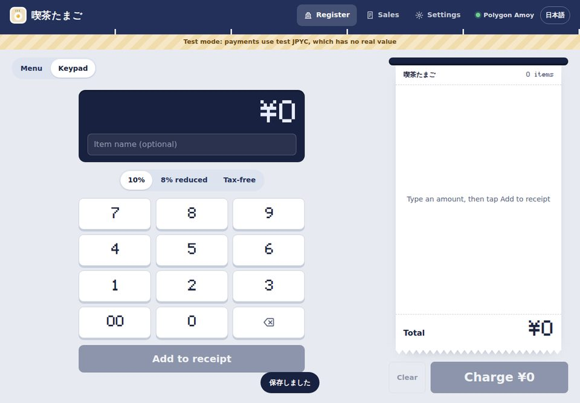
テストモードの例：画面上部に黄色いしま模様の帯が出ます（この画像は英語表示）。この状態では本物のお金は動きません。本番営業では、帯が出ていないことを確認してください。
ヒント右上の「EN」「日本語」ボタンで、表示言語を切り替えられます。海外のお客様への説明にも使えます。
3画面の見かた
レジ画面は、左側の「商品」と、右側の「レシート（カート）」でできています。
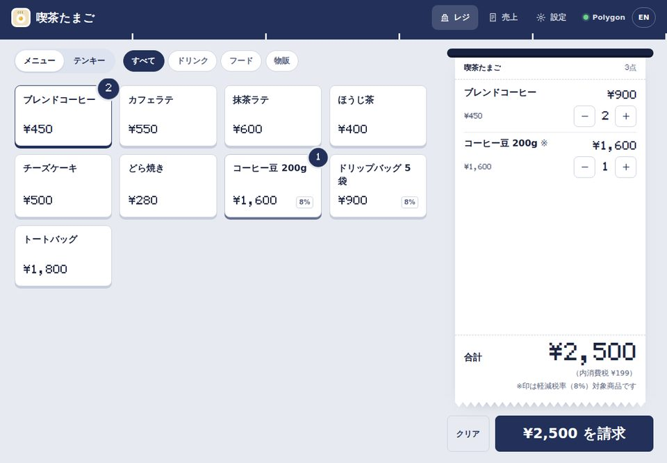
1
2
3
4
5
6
レジ画面（タブレット）
| 番号 | 名前 | 説明 |
|---|
| 1 | ヘッダー | 左に店名。右に「レジ」「売上」「設定」の切り替えと、接続表示（緑の点＝正常）、言語切り替え。 |
| 2 | メニュー／テンキー | 商品ボタンで選ぶ「メニュー」と、金額を直接入力する「テンキー」を切り替えます（第5章）。 |
| 3 | カテゴリ | ドリンク・フードなどで商品ボタンを絞り込みます。「すべて」で全部表示。 |
| 4 | 商品ボタン | タップするとレシートに追加。右上の数字はカートに入っている数です。「8%」は軽減税率の商品です。 |
| 5 | レシート（カート） | 選んだ商品・数量・合計。＋／−で数量を変更し、0にすると消えます。「※」は軽減税率の商品、「内消費税」は税込価格に含まれる消費税額です。 |
| 6 | 請求ボタン | 「¥○○ を請求」でお支払い画面を開きます。「クリア」はレシートを空にします。 |
スマホで使う場合
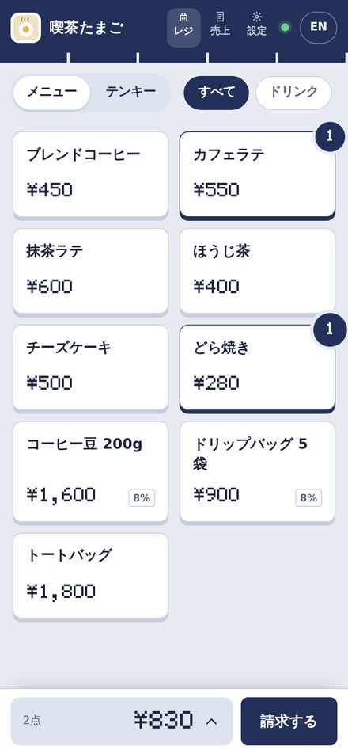
スマホでは画面下に合計と「請求する」が表示されます。
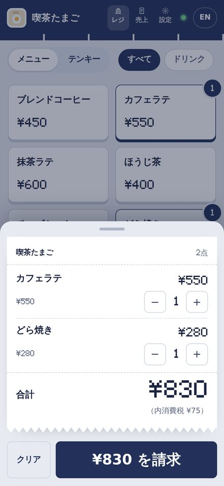
合計の部分をタップすると、レシート（カート）が下から開きます。
4基本のお会計
いちばんよく使う流れです。1回のお会計は、お客様の操作を含めて30秒〜1分ほどです。
- 商品をタップする同じ商品をもう一度タップすると数量が増えます。数量はレシートの＋／−でも変えられます。
- 合計を確認して「¥○○ を請求」を押すお支払い画面に切り替わります。
- QRコードをお客様に見せるタブレットをお客様の方へ向けるか、「お客様に表示」を押して、金額とQRコードだけを大きく表示します。
- お客様が支払うお客様がスマホのカメラでQRを読み取り、ウォレットで支払います（第6章）。画面には「○○で入金を待っています」と緑の点が表示されています。
- 「入金済」の印を確認する入金を確認するとチャイムが鳴り、赤い日付印が押された画面に変わります。
- レシートを渡すお客様に右側の「電子レシート」QRを読み取ってもらいます。紙が必要なら「レシートを印刷」。
- 「次のお会計」を押すレジ画面に戻り、レシートは空になります。
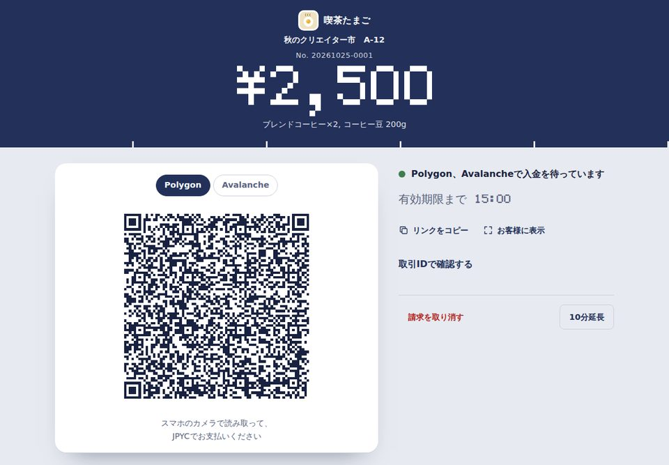
お支払い画面：上に金額、左にQRコード、右に入金の待ち状態と有効期限。
4基本のお会計（つづき）
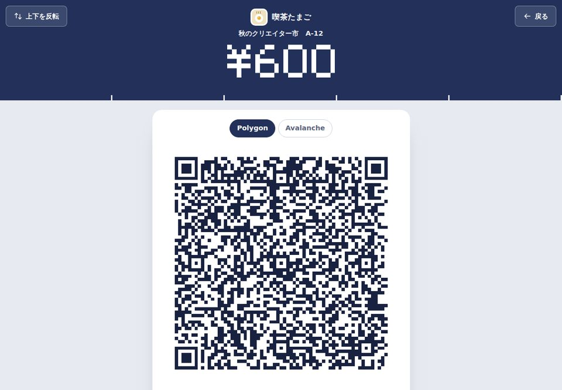
「お客様に表示」：金額とQRコードだけを大きく表示します。左上の「上下を反転」は、スマホを逆さに持って見せるとき用です。右上の「戻る」で元に戻ります。
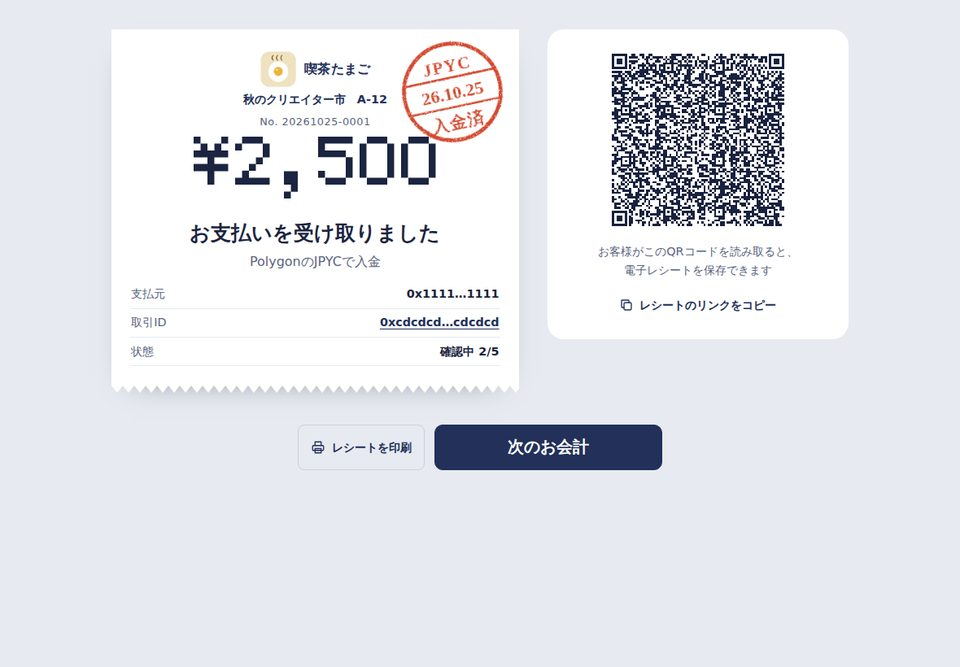
入金済：赤い日付印が押されます。「状態」が「確認中」から「確定」に変わります。右側はお客様用の電子レシートQRです。
「確認中」と「確定」日付印が出た時点で、支払いはブロックチェーンに記録されています。通常はその場で商品をお渡しして大丈夫です。「確定」は数秒〜1分ほどで表示されます。高額のお会計では、「確定」になるまで待つと安心です。
4基本のお会計（便利な機能）
| 機能 | 使い方 |
|---|
| QRコード | ひとつのQRコードで、どのウォレットのお客様にも対応します。スマホのカメラやLINEで読み取るとお支払いページが開き、そこからHashPort Walletの手順や、各ウォレットアプリで開くボタンを選べます。 |
| チェーンの切り替え | QRコードの上に「Polygon」「Avalanche」などのタブがある場合、お客様のJPYCが入っているチェーンに合わせて切り替えます。どのタブを表示していても、受け付けているすべてのチェーンで入金を確認しています。 |
| リンクをコピー／共有 | お支払いページのリンクを、LINEやメールで送れます。電話注文など、お客様がその場にいないときに使います。 |
| 上下を反転 | 「お客様に表示」の画面の左上にあります。スマホを逆さに持ってお客様に見せると、画面が上下逆に表示され、お客様から正しい向きで読めます。次からも同じ向きで表示されます（もう一度押すと元に戻ります）。QRコードは、どの向きでも読み取れます。 |
| 10分延長 | 有効期限（標準15分）を延ばします。延長するとQRコードが新しくなるので、お客様にもう一度読み取ってもらってください。 |
| 請求を取り消す | 間違えたときに使います。レシート（カート）の内容は残るので、直してもう一度請求できます。取り消した請求は「売上」→「未入金」に残ります。 |
| 取引IDで確認する | お客様が「払ったのに画面が変わらない」とき、お客様のウォレットに表示される取引ID（0xから始まる長い文字列）を貼り付けて確認します（第7章）。 |
ヒント：画面を閉じてしまっても大丈夫お支払い画面の途中でアプリを閉じたり再読み込みしたりしても、支払い待ちの請求は自動で元に戻ります。
5テンキーで金額を入力する
メニューにない商品や、金額だけを請求したいときに使います。
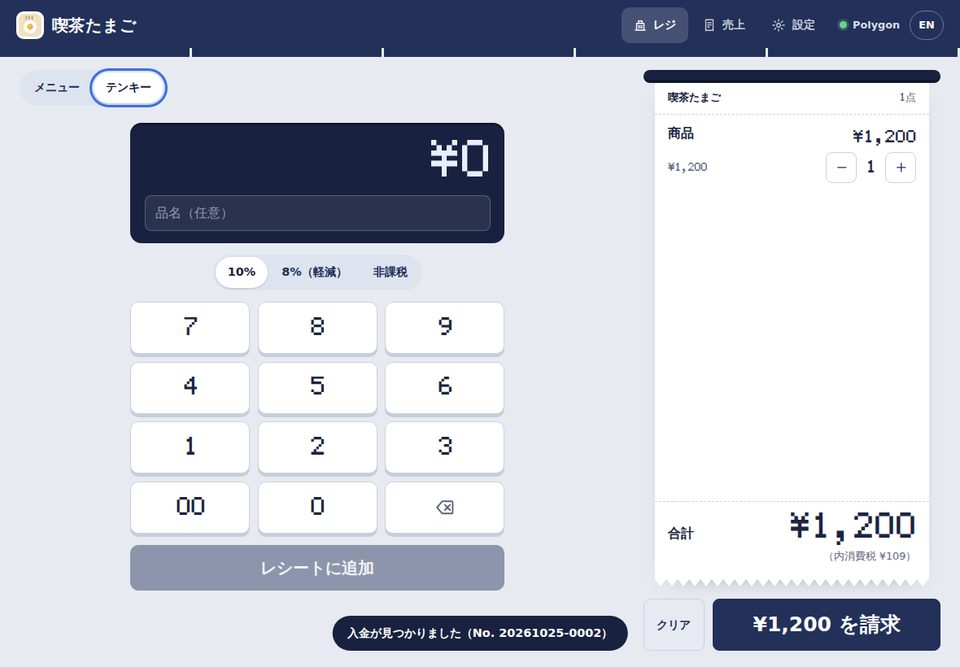
テンキー：上の黒い画面に金額が表示されます。
- 「テンキー」に切り替える画面左上の「メニュー／テンキー」で切り替えます。
- 金額を入力する数字キーで入力し、間違えたら「⌫」で1桁消します。品名は任意です（空欄なら「商品」）。
- 税率を選ぶ「10%」「8%（軽減）」「非課税」から選びます。
- 「レシートに追加」を押すレシートに1行追加されます。続けて入力するか、「請求」へ進みます。
税率の選び方（一般的な例）店内で飲食する場合は10%、持ち帰りの飲食料品（お酒を除く）は8%（軽減税率）になるのが一般的です。判断に迷う場合は、お店のルールに従うか、店長に確認してください。
ヒントキーボードやテンキー付きのタブレットでは、数字キーで入力し、Enter で追加、Esc でクリアできます。
6お客様への案内
接客のことば（例）
| 場面 | ことばの例 |
|---|
| QRを見せるとき | 「スマホのカメラで、こちらのQRコードを読み取ってください。」 |
| 手数料なし決済が有効なとき | 「ネットワーク手数料はお店が負担しますので、JPYCだけでお支払いいただけます。」 |
| 手数料なし決済が無効なとき | 「JPYCのほかに、手数料として少額のPOLが必要です。」 |
| ウォレットが開かないとき | 「お支払いページの『ウォレットアプリで開く』から、お使いのアプリを選んでください。」HashPort Walletの方は、お支払いページの一番上「コピーして送る（HashPort Walletなど）」の手順で払えます（アドレスをコピー →「送る」で貼り付け → 金額を入れて送る。入金は自動で確かめられます）。LINEのQRリーダーで読み取ったときは、自動でSafari／Chromeで開きます。ほかのアプリの中で開いたときは、メニューの「ブラウザで開く」を選んでもらいます。アプリが開かないときや一覧にないウォレット（Rabbyなど）は、ページの「ほかのウォレット・アプリが開かないとき」へ：① リンクをコピーしてウォレットアプリのブラウザに貼り付け ② ウォレットアプリのQRリーダーでレジのQRを読み取る（アプリによります）③ 手動で送金。 |
| 支払いが終わったとき | 「ありがとうございます。こちらのQRで電子レシートを保存できます。」 |
お客様のスマホに表示される画面
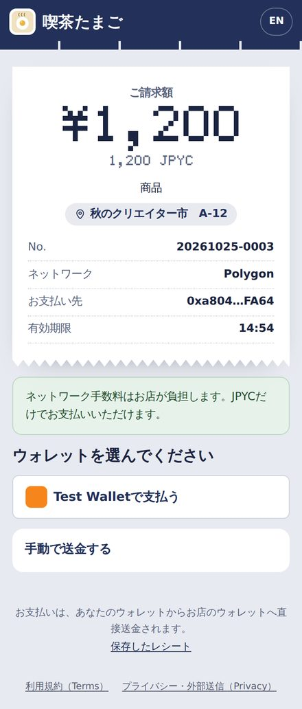
読み取り直後：ご請求額とウォレットの選択。緑の枠は手数料なしの案内です。
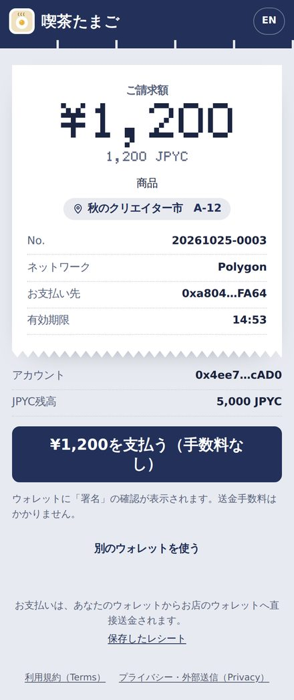
ウォレット接続後：残高を確認し「支払う（手数料なし）」。
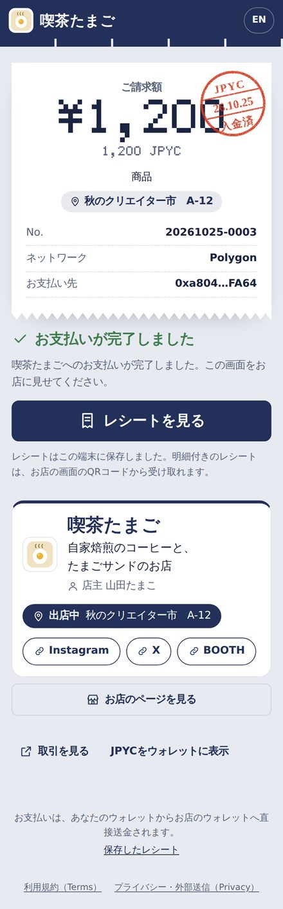
完了：お客様の画面にも日付印が出ます。
お客様の画面では判断しないお客様のスマホの完了画面は参考です。商品をお渡しする判断は、必ずレジ画面の「入金済」で行ってください。スクリーンショットなどで偽の画面を見せられる可能性があるためです。
6お客様への案内（つづき）
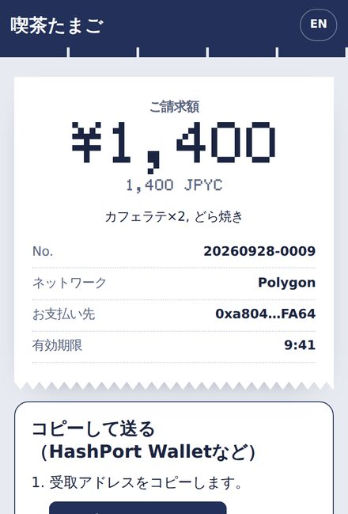
ブラウザにウォレットがない場合：一番上に「コピーして送る（HashPort Walletなど）」の手順、その下にウォレットアプリの中で開き直すボタンが出ます。
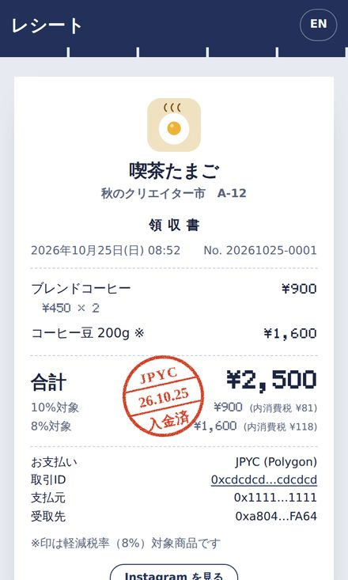
電子レシート：明細・税率ごとの金額・取引IDが入ります。ブロックチェーン上で支払いを確認すると緑のチェックと日付印が表示されます。
よくある質問
| お客様の質問 | 答え方 |
|---|
| JPYCはどこで手に入る？ | JPYCの公式サービスで入手できます（詳しくはJPYC公式サイト）。お店では販売していません。 |
| 手数料はかかる？ | 手数料なし決済が有効なら、お客様の手数料はかかりません。無効の場合は、少額のネットワーク手数料（POL）がかかります。お店の決済手数料はありません。 |
| レシートは？ | 画面の電子レシートQRから保存できます。紙が必要なら印刷します。登録番号を設定しているお店では、適格簡易請求書としての記載があります。 |
| 領収書（宛名入り）がほしい | 電子レシートの「宛名・但し書きを入れる」から、お客様ご自身で入れられます。印刷やPDF保存もできます（第10章）。 |
| お店を応援したい（投げ銭） | お店が受け付けていれば、お店のページの「このお店を応援する」から送れます。売上ではないため、レシートは出ません（第10章）。 |
| 間違えて払った／返金してほしい | その場で返金はできません。レシート番号と内容を控え、店長が対応します（第7章「返金」）。 |
7困ったとき
まず落ち着いて、次の表で症状を探してください。解決しないときは、無理をせず店長に連絡します。
| こんなとき | こうする |
|---|
| お客様は「払った」と言うのに、レジが「入金を待っています」のまま | ① 30秒〜1分待つ。② 右上の接続表示が緑か確認する。③ お客様のウォレットから取引IDを教えてもらい、「取引IDで確認する」に貼り付けて「確認」。④ それでも見つからなければ、商品は渡さずに店長へ。 |
| 「請求額と異なる入金」が表示された | 表示された金額を確認します。金額が正しければ「この入金を使う」で完了にできます。少ない場合は不足分の扱いを店長に確認してから使います。 |
| 「期限切れ」になった | 「10分延長」を押し、お客様に新しいQRをもう一度読み取ってもらいます。期限後も3分間は、遅れた入金を確認し続けます。 |
| 間違えて請求した | 「請求を取り消す」。レシート（カート）は残るので、直して請求し直します。 |
| 取り消した後・期限切れの後に、お客様が支払っていた | 「売上」→「未入金」の該当する請求で「再確認」。入金が見つかると売上に移ります。 |
| 右上が赤い／「接続できません」 | Wi-Fiを確認し、少し待ちます（自動で別の接続先に切り替わります）。続く場合は店長へ（設定の「接続先（RPC）」で状態を確認。第10章）。 |
| 「入金を見つけました。別のノードでも確かめています…」のまま | 通常は数秒で「入金済」になります。そのまま待ちます。別のノードで確認できなかった入金は「請求額と異なる入金」の欄に「別のノードで確認できませんでした」と表示されるので、自分では「この入金を使う」を押さず、店長に確認します。 |
| 画面上部に赤い帯「受取アドレスの設定が店主の署名と一致しません」 | 設定が書き換えられた可能性があります。お会計を止めて、すぐに店長に連絡してください。店長は受取アドレスを確認し、店主確認をやり直します。 |
| 画面上部に黄色い帯「受取アドレスの店主確認がまだです」 | 店長に伝えます。店長が「設定」→「お店とウォレット」の「ウォレットで店主確認」を行うと消えます。 |
| お客様の残高が足りない | お客様の画面に表示されます。別の支払い方法を案内してください。 |
| お客様のJPYCが別のチェーンにある | お客様の画面に「○○には残高があります」と表示されます。レジのチェーンタブをそのチェーンに切り替えます（受け付けているチェーンのみ）。 |
| お客様の画面に「手数料なしの支払いは完了しませんでした」 | お客様はそのまま通常の支払い（手数料あり）で続けられます。続けて起きる場合は店長へ（ガス用ウォレットの残高不足や、通信の問題の可能性）。 |
| お客様の画面に「お店に届いたか確認しています」と残り時間 | 手数料なしの支払いで、レジからの返事が届かなかったときの表示です。レジの請求画面を閉じずに、残り時間（最大2〜3分）が終わるまで待ってもらいます。その間に入金が見つかれば完了します。見つからなければ、お客様の画面に通常の支払いが案内されます（二重払いにはなりません）。 |
| レシートが印刷できない | プリンターの電源・用紙を確認します。すぐに直らない場合は電子レシートQRで代わりにお渡しします。 |
| アプリを閉じてしまった | もう一度開けば、支払い待ちの請求は自動で元に戻ります。 |
7困ったとき（つづき）：返金
返金について
Rejiには返金ボタンはありません
JPYCの返金は、店長（または権限のある人）がお店のウォレットから、お客様のウォレットへ送金して行います。スタッフは次の4つをメモして店長に渡してください。
- レシート番号（No. 20260928-0012 など）
- 支払元のアドレス（レシートの「支払元」）
- 返金する金額
- 理由と日時
売上の記録は削除しないでください。返金は別に記録します（会計処理は店長・会計担当の指示に従います）。
7困ったとき（つづき）：オフライン・非常時（後払い）
停電や通信障害でインターネットにつながらないときも、お会計の画面は使えます。入金の確認は、つながってから自動で行います。
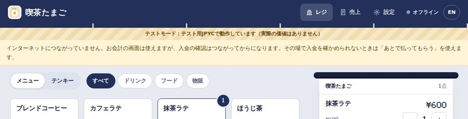
つながらないときは、画面上部に黄色い帯が出て、右上が「オフライン」になります。
その場で入金を確かめられないとき：あとで払ってもらう
- お会計の画面で「あとで払ってもらう」を押す店長が「設定」→「レジの動作」で使えるようにしておきます。1回の上限・未回収の合計の上限を超えるお会計では使えません。
- お客様にQRコードを写真で保存してもらうスマホが使えない方には「控えを印刷」で、QRコードつきの控えをお渡しします。
- 必要ならメモを入れて「これで完了（商品を渡す）」お名前や連絡先など。メモはこの端末の中だけに保存されます。
- お客様は、つながったときに支払う期限（標準7日）までなら、どのウォレットからでも払えます。レジがつながっているあいだ、入金を自動で探して売上にします。
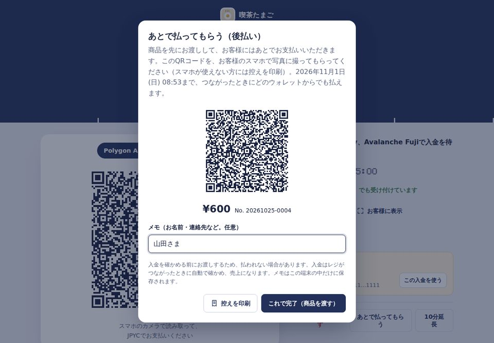
「あとで払ってもらう」：お客様に保存してもらうQRコードと、メモ。
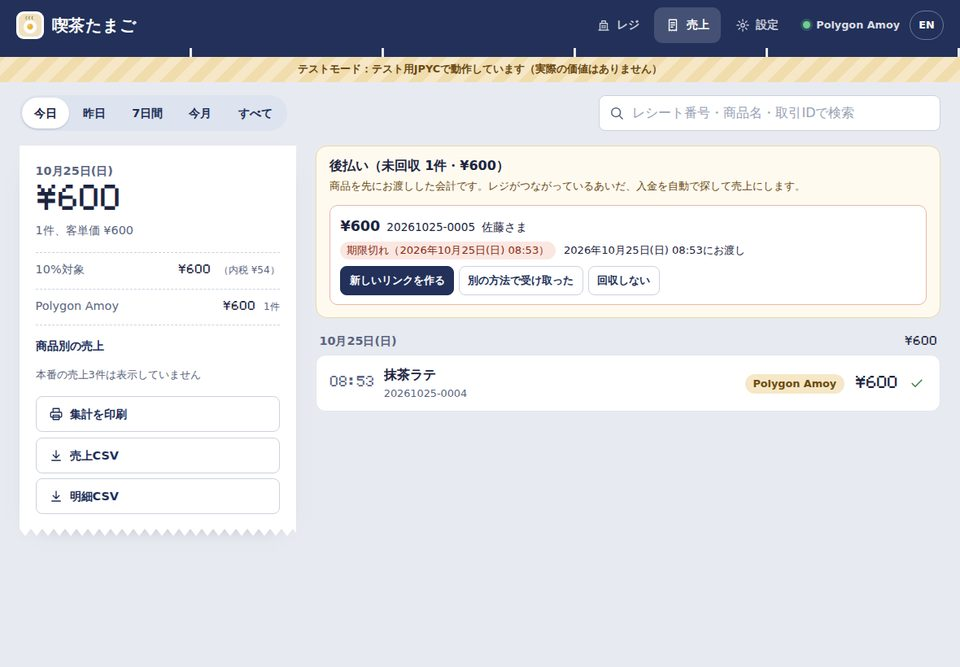
「売上」の「後払い」：期限が過ぎると「期限切れ」になり、次の対応を選べます。
期限までに払われなかったとき
| 選べること | 内容 |
|---|
| 新しいリンクを作る | 新しい期限のQRコードを作り、お客様に送ったり、見せたりします。前のQRコードで払われた場合も、自動で売上になります。 |
| 別の方法で受け取った | 現金や振り込みなどで受け取ったときに記録します（PINが必要）。JPYCの売上には含まれません。 |
| 回収しない | 回収をやめるときに記録します（PINが必要）。あとから同じ金額のJPYCが届いた場合は、売上として記録されます。 |
後払いは「信用」でお渡しします入金を確かめる前に商品を渡すため、払われない場合があります。上限を決めて、店長の判断で使います。お客様がその場で払えて、レジだけがつながらない場合も、入金はつながってから自動で確かめられます。
8売上画面
画面上の「売上」を押すと開きます。左に集計、右に一覧が表示されます。
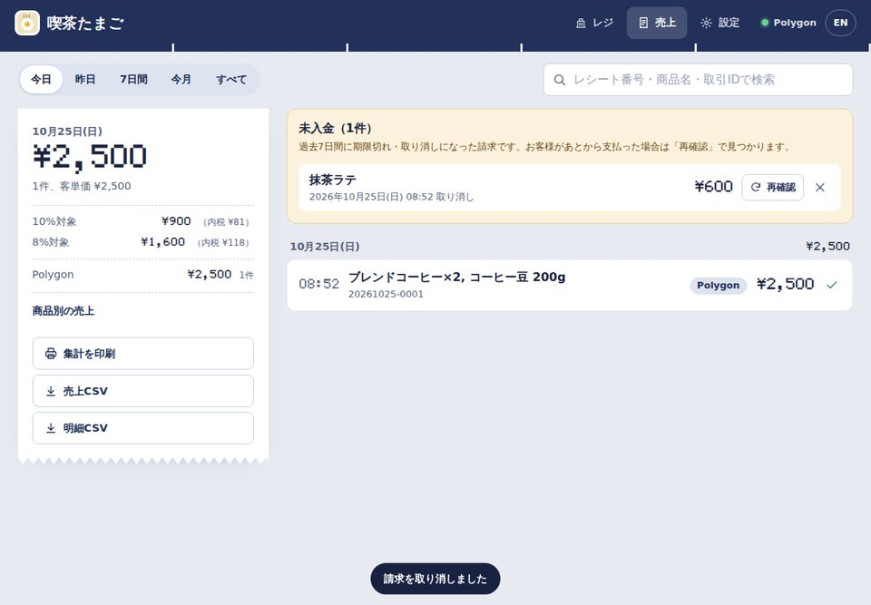
売上画面：左が集計（日計）、右上が未入金、その下が売上の一覧。
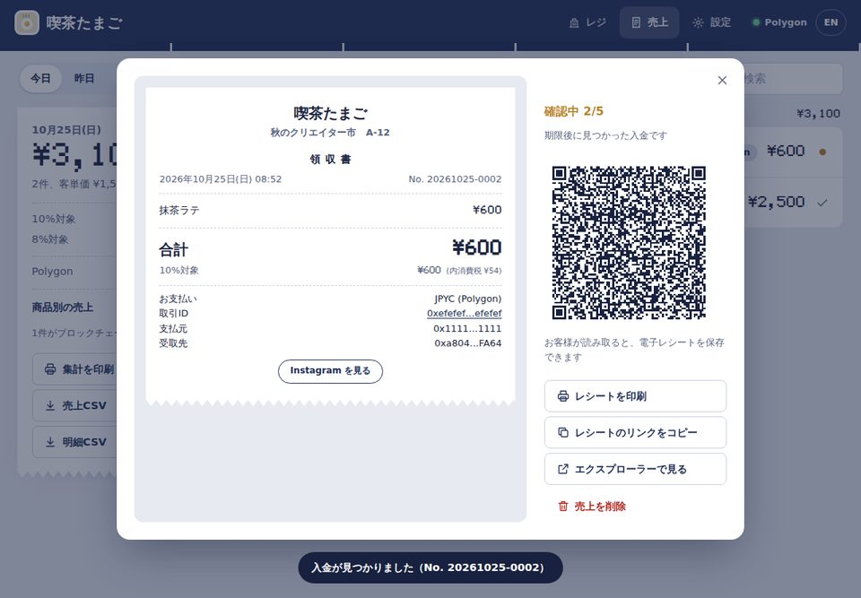
一覧の行をタップするとレシートが開きます：再印刷、リンクのコピー、エクスプローラーでの確認、削除（PINが必要）。
| 項目 | 説明 |
|---|
| 期間 | 今日・昨日・7日間・今月・すべてを切り替えます。検索欄では、レシート番号・商品名・取引IDで探せます。 |
| 集計 | 売上合計、件数と客単価、税率ごとの対象額と消費税、チェーンごとの合計、「商品別の売上」。 |
| 一覧のマーク | 緑の✓＝確定、黄色の点＝確認中（しばらくすると✓になります）。 |
| 未入金 | 期限切れや取り消しになった過去7日間の請求。「再確認」で遅れた入金を探せます。不要なものは「×」で一覧から外せます。 |
| 集計を印刷 | その期間の集計表（日計表）を印刷します。 |
| 売上CSV／明細CSV | Excelや会計ソフト用のファイルを保存します。売上CSVは1件1行、明細CSVは商品1行ずつです。 |
テストモードの売上テストモードで行った売上は、本番では集計に含まれず、一覧にも表示されません（逆も同じ）。
9閉店作業
- 「売上」→「今日」で、売上合計と件数を確認した
- 「集計を印刷」で日計表を印刷した（または画面を記録した）
- 一覧に黄色の点（確認中）が残っていない。残っている場合は数分待って再度確認
- 「未入金」を確認し、必要なら「再確認」を行った
- タブレットを充電器につないだ
店長の定期作業
| 頻度 | 作業 |
|---|
| 毎週 | 「設定」→「データ」→「バックアップを保存」。データはこのタブレットの中だけにあるため、壊れたり初期化したりすると消えてしまいます。バックアップファイルは安全な場所に保管します。 |
| 毎月 | 「売上」→「今月」→「売上CSV」「明細CSV」を保存し、会計担当に渡します。 |
| 毎月 | 手数料なし決済を使っている場合、ガス用ウォレットの残高を確認します（第11章）。 |
| 端末の交換・初期化の前 | バックアップを保存し、ガス用ウォレットの「残高を店主のウォレットへ戻す」を行います。ガス用ウォレットはバックアップに含まれません。 |
| 随時 | 受け取ったJPYCの円への交換（償還）は、JPYC公式の手続きに従って行います。 |
9店長向け：別の端末でお店を使う（引き継ぎ）
タブレットを買い替えるとき、2台目のレジを使うとき、故障や紛失に備えるときは、バックアップファイルでお店を引き継ぎます。お店のデータは端末の中にだけあるので、いまの端末で保存したファイルが頼りです。
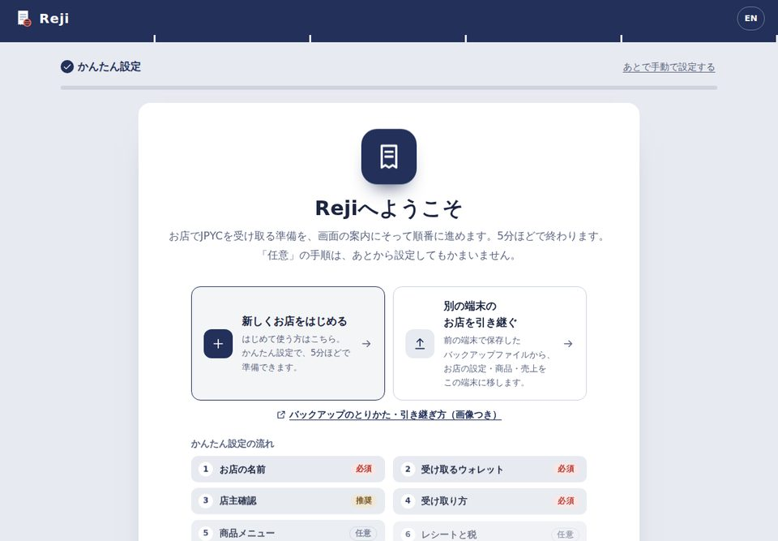
新しい端末のはじめての画面。「別の端末のお店を引き継ぐ」を選びます。
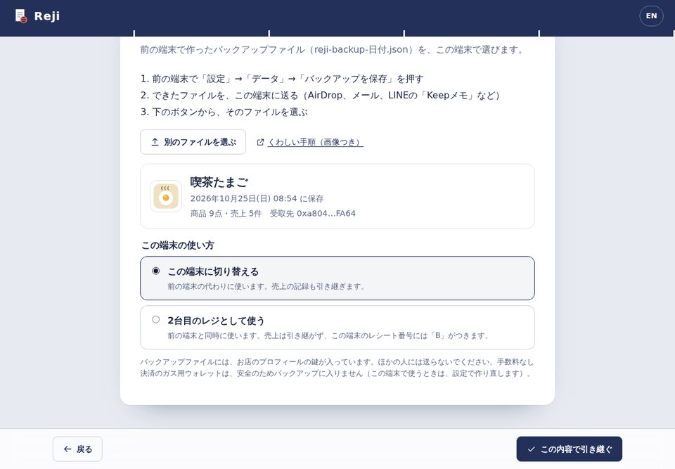
ファイルを選ぶと、中身を確かめてから引き継げます。
手順
- いまの端末で：「設定」→「データ」→「バックアップを保存」。
reji-backup-日付.json ができます。
- ファイルを送る：AirDrop、自分あてのメール、LINEの「Keepメモ」など。ほかの人やグループのトークには送りません。
- 新しい端末で：Rejiを開き、「別の端末のお店を引き継ぐ」→「バックアップファイルを選ぶ」。中身を確かめ、使い方を選んで「この内容で引き継ぐ」。iPhone・iPadで、Safariで作ったお店をホーム画面のRejiに移すときも同じです。
| 使い方 | 引き継がれるもの |
|---|
| この端末に切り替える | 設定・商品・売上・未入金・レシート番号。前の端末の代わりに使うときに選びます。 |
| 2台目のレジとして使う | 設定と商品だけ。売上は前の端末に残り、この端末のレシート番号には「B」などの記号がつきます。 |
ガス用ウォレットは引き継がれません手数料なし決済のガス用ウォレットは、安全のためバックアップに入りません。新しい端末では「設定」→「手数料なし決済」で作り直し、少額のPOLを入れます。画像つきの手順は、Rejiのサイトの「バックアップと引き継ぎ」のページ（backup.html）にもあります。
10店長・管理者向け：設定
「設定」はPINで保護できます。スタッフは原則として設定を変更しません。
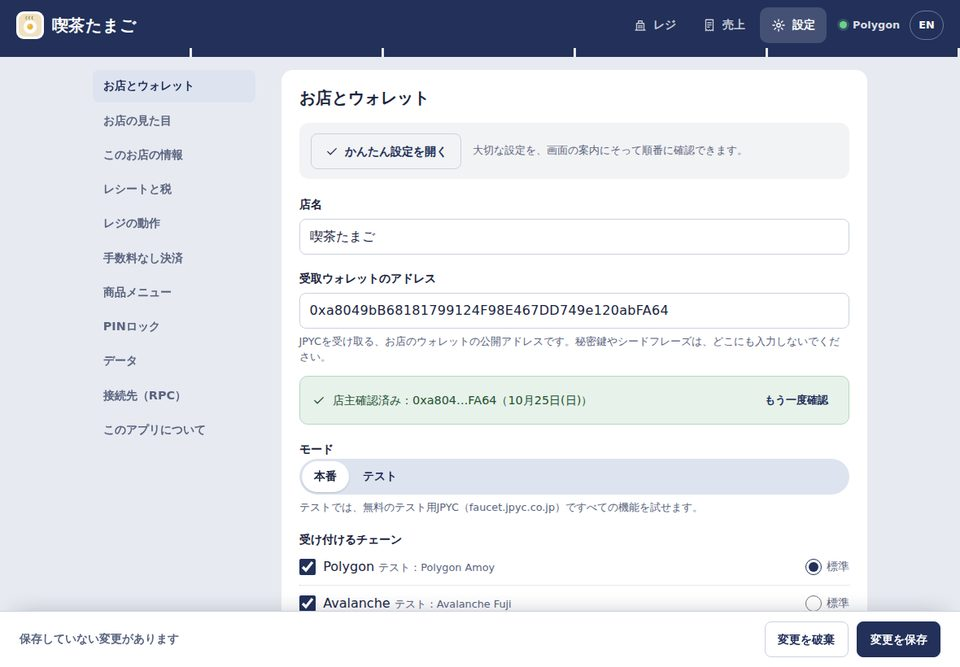
設定画面：左の項目から移動できます。変更すると画面下に「変更を保存」が表示されます。
| 項目 | 内容と注意 |
|---|
| お店とウォレット | 店名、受取ウォレットのアドレス、店主確認、モード（本番／テスト）、受け付けるチェーンと「標準」。受取アドレスを変えると、以後の入金先が変わります。店主確認をしている場合、変更には店主のウォレットでの署名が必要です。変更後は新しいアドレスで店主確認をし直し、1円などの少額で入金テストをしてください。 |
| お店の見た目・このお店の情報 | ロゴ、色、紹介、リンク、イベント出店。お店のページの共有、店頭POP、応援（投げ銭）、識別情報も（この章の後半）。 |
| レシートと税 | 税込／税抜、適格請求書発行事業者の登録番号（T＋13桁）、住所・電話、レシートのひとこと、端末記号（複数のレジで同じウォレットを使う場合）、用紙の幅（58mm／80mm）。 |
| レジの動作 | 請求の有効期限（分）、入金時のチャイム、言語、後払いと上限（第7章）。 |
| 手数料なし決済 | ガス用ウォレットの作成、入金用QR、残高、お客様への案内のオン／オフ、残高を戻す、秘密鍵の表示（第11章）。 |
| 商品メニュー | 商品名・価格・税率・カテゴリ。上下の矢印で並べ替え、ゴミ箱で削除。「変更を保存」を押すまで反映されません。 |
| PINロック | 4〜8桁のPINを設定すると、設定・データ操作・売上の削除にPINが必要になります。一度解除すると10分間は再入力不要です。「今すぐロック」ですぐに戻せます。 |
| データ | バックアップの保存・復元、すべて消去。「すべて消去」は元に戻せず、ガス用ウォレットも消えます。先に残高を戻してください。 |
| 接続先（RPC） | 通常は設定不要です（自動で選びます）。状態の確認と、自分専用の接続先の追加ができます（第10章「接続先（RPC）」）。 |
10店長・管理者向け：はじめての設定（かんたん設定）
Rejiは、お店ごと・端末ごとに設定します。運営者への登録や契約はありません。はじめて開くと「かんたん設定」が始まり、画面の案内にそって9つの手順を順番に進めます（約5分）。「必須」は飛ばせません。「推奨」「任意」は、あとから「設定」でも行えます。
| # | 手順 | 区分 | 内容 |
|---|
| 1 | お店の名前 | 必須 | レシートと、お客様のお支払い画面に表示されます。 |
| 2 | 受け取るウォレット | 必須 | お店のウォレットの公開アドレス（0x…）を貼り付けます。4文字ずつ区切って表示されるので、最初と最後の文字がウォレットアプリの表示と同じか確かめます。秘密鍵やシードフレーズは入力しません。 |
| 3 | 店主確認 | 推奨 | 受取アドレスのウォレットで署名し、持ち主であることを確かめます。送金も手数料も発生しません。署名のしかたは次のページ。 |
| 4 | 受け取り方 | 必須 | 「テストモードで試す（おすすめ）」か「本番で始める」を選び、受け付けるチェーン（おすすめはPolygon）を選びます。 |
| 5 | 商品メニュー | 任意 | サンプルメニュー／自分で数品入力／メニューを使わない（テンキーで入力）から選びます。 |
| 6 | レシートと税 | 任意 | 税込・税抜、登録番号（T＋13桁）、住所・電話。空欄のままでも使えます。 |
| 7 | お店の見た目 | 任意 | ロゴ画像、お店の色、お店のリンク（Instagramなど）。レジ、お客様の画面、レシートに表示されます（この章の後半）。 |
| 8 | PINロック | 推奨 | 「設定」や売上データを開くときの4〜8桁の番号。 |
| 9 | 手数料なし決済 | 任意 | ガス用ウォレットを作り、少額のPOLを入れます（第11章）。店主確認が必要です。 |
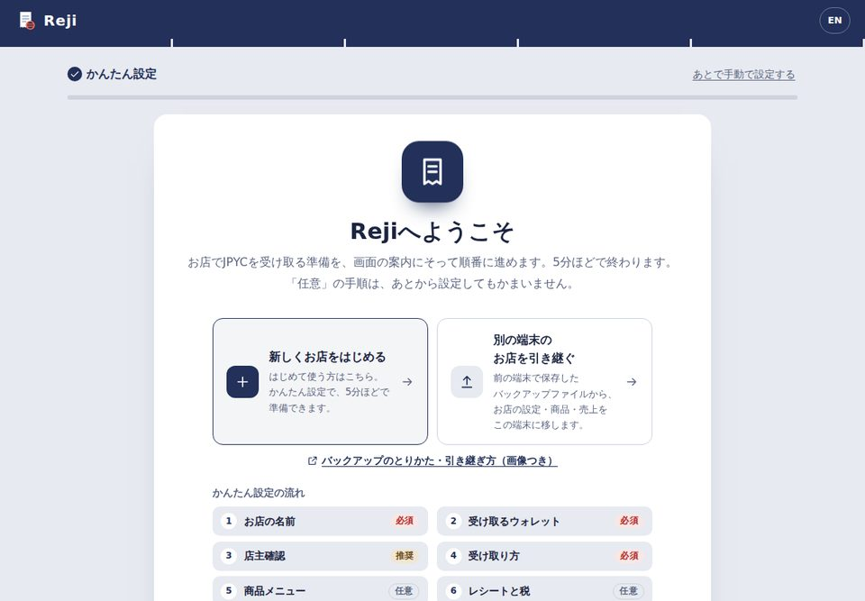
かんたん設定の最初の画面。手順と区分（必須・推奨・任意）が一覧で表示されます。
10はじめての設定（つづき）と店主確認
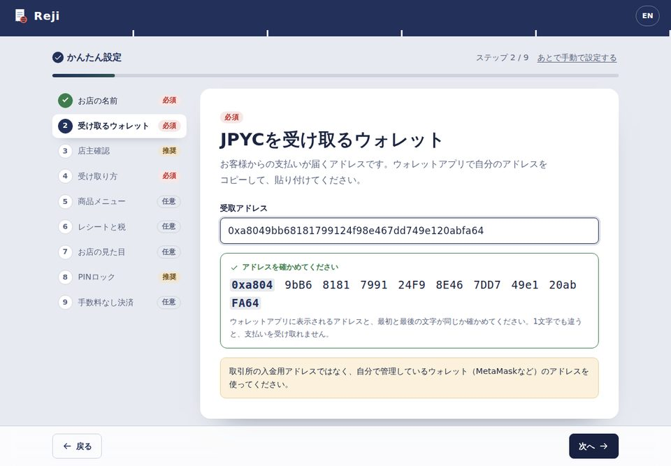
受取アドレスの確認。最初と最後の4文字を見比べます。
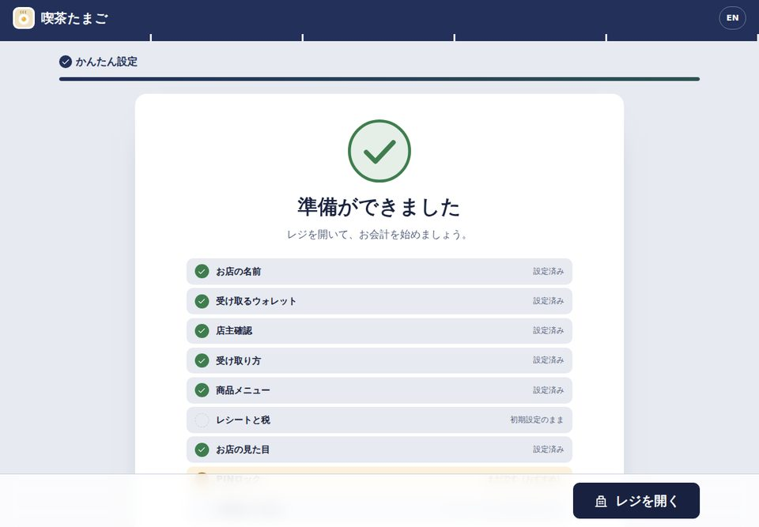
最後に一覧で確認。「まだです（おすすめ）」の項目は、あとで設定します。
ホーム画面に追加して、アプリのように使う最後の画面に、お使いの端末でホーム画面に追加する方法が出ます。iPhone・iPadでは、ホーム画面のRejiとSafariのデータが別々なので、先にホーム画面に追加してから、ホーム画面のRejiで設定すると引き継ぎが要りません。
途中でやめたとき・あとで見直すとき
途中で画面を閉じても、次に開くと続きから再開します。「設定」→「お店とウォレット」の「かんたん設定を開く」で、いつでももう一度確認できます。画面右上の「あとで手動で設定する」を選ぶと確認の画面が出ます。設定もれを防ぐため、できるだけ最後まで進めてください。
店主確認の署名のしかた
この端末のウォレットで署名：タブレットやパソコンにウォレット（MetaMaskの拡張機能、MetaMaskアプリ内のブラウザなど）がある場合。
スマホで署名：タブレットにウォレットがない場合。店主のスマホのカメラでQRコードを読み取り、開いたページで「○○で署名」を押します。署名はインターネット上の公開の通信網（Nostr）でレジに届き、レジの画面が自動で閉じます。
テストモードと本番テストモードでは本物のお金は動きません。営業前に必ず「本番」になっていることを確認してください（「設定」→「お店とウォレット」で切り替え）。テスト用と本番用の売上は別々に表示されます。
10店長・管理者向け：店主確認（つづき）
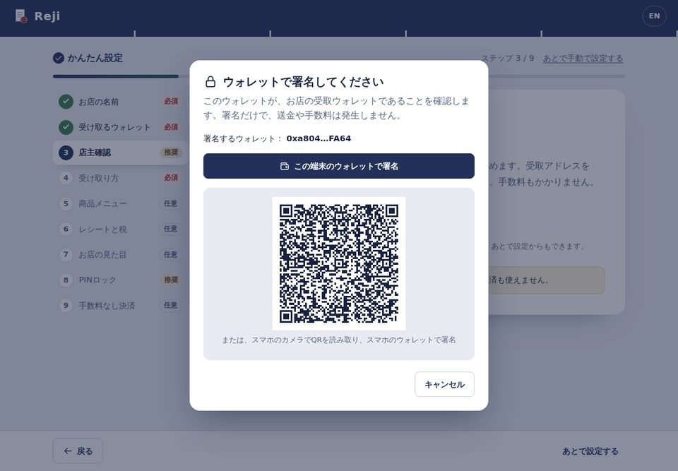
レジに表示される署名の画面。
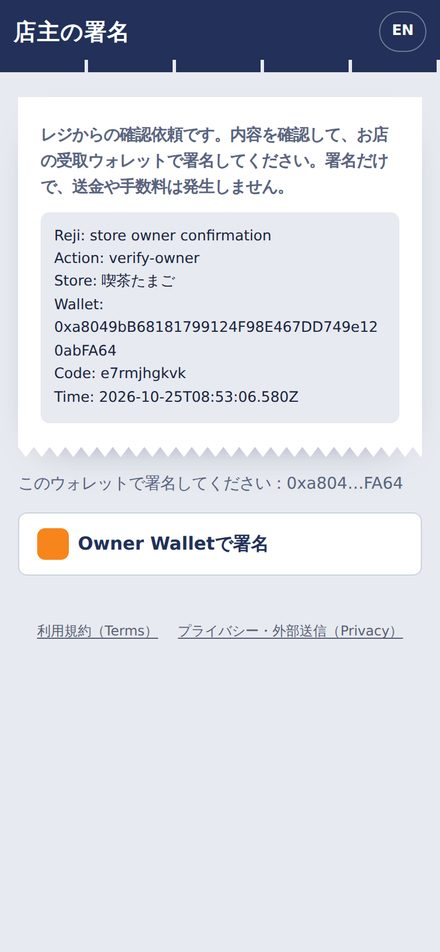
QRを読み取った店主のスマホ。
店主の署名が必要な操作
| 操作 | 理由 |
|---|
| 受取アドレスの変更 | スタッフや第三者が、売上の送り先を勝手に変えられないようにするため。変更後は、新しいアドレスで店主確認をし直します。 |
| ガス用ウォレットの残高を戻す | 残高は店主のウォレット（受取アドレス）へ送られます。 |
| ガス用ウォレットの秘密鍵を表示 | 秘密鍵を知っている人は、ガス用ウォレットのPOLを使えるため。 |
| 手数料なし決済を使う | 店主確認が済んでいないと、ガス用ウォレットを作れません。 |
署名で起きること・起きないこと
署名は「このウォレットの持ち主です」という証明だけです。お金は動かず、手数料もかかりません。署名の内容（店名・操作・ウォレット・日時）は画面で確認できます。見覚えのない署名の依頼には応じないでください。
複数の店舗・複数のレジ
店舗ごと・端末ごとに、それぞれ設定と店主確認を行います。同じウォレットを複数のレジで使う場合は、「レシートと税」の端末記号を端末ごとに変えてください。
10店長・管理者向け：お店の見た目（ロゴ・色・リンク）
「設定」→「お店の見た目」（かんたん設定の7番目でも設定できます）で、ロゴ画像、お店の色、お店のリンクを設定できます。どれも任意です。設定すると、お店のスタッフにもお客様にも、どのお店のレシートかがひと目でわかります。
| 項目 | 表示される場所 |
|---|
| ロゴ画像 | レジの上部、お会計の画面（お客様に見せる画面）、入金済の画面、お客様のお支払い画面、電子レシート、印刷したレシート |
| お店の色 | レジとお客様のお支払い画面の上の帯、お会計の画面の上部、レシートの店名と線。明るすぎる色は、文字が読めるよう自動で少し濃くします。 |
| お店のリンク | 電子レシートとお支払い完了画面のボタン（例：「Instagram を見る」）。https:// から始まるアドレスだけ使えます。印刷したレシートにはアドレスが印字されます。 |
| お礼のメッセージ | 「レシート」→「レシートのひとこと」に入れると、お客様のお支払い完了画面とレシートに出ます。 |
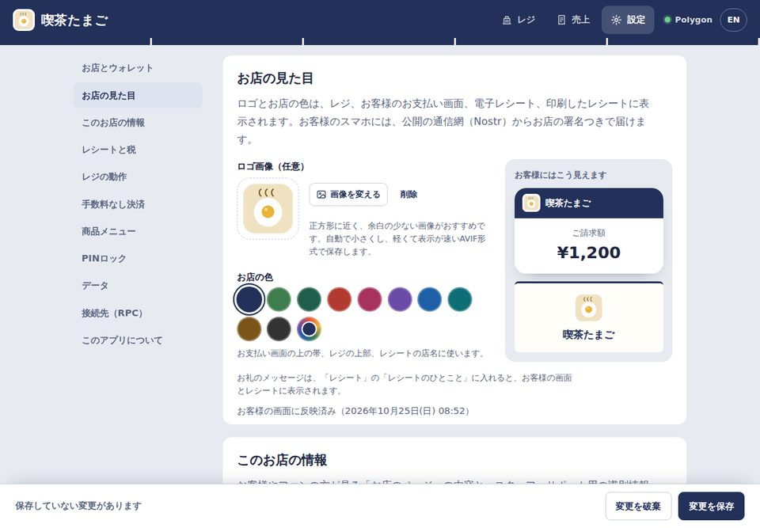
「お店の見た目」。右側で、お客様にどう見えるかを確かめながら設定できます。
お会計の画面。上部にロゴと店名が出ます。
ロゴ画像のこつ
正方形に近く、余白の少ない画像がきれいに見えます（PNG・JPEG・AVIF・SVGなど、ふつうの画像ならどれでも選べます）。
選んだ画像は自動で小さくし（256ピクセル以下）、軽くて表示が速いAVIF形式にして、この端末に保存します。透明な部分は白になります。AVIFを作れないブラウザでは、PNG形式（透明はそのまま）で保存されます。元の画像ファイルは変わりません。
自分のお店のロゴなど、使う権利のある画像だけを使ってください。
10お店の見た目（つづき）：お客様の画面
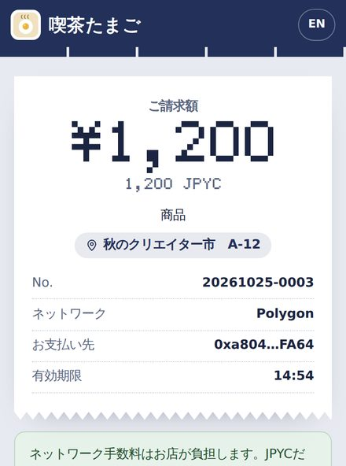
お客様のお支払い画面。上の帯に、お店のロゴと店名が出ます。
 電子レシート。ロゴと、お店のリンクのボタンが出ます。保存したレシートの一覧にもロゴが並びます。
電子レシート。ロゴと、お店のリンクのボタンが出ます。保存したレシートの一覧にもロゴが並びます。
お客様のスマホに届くしくみ
ロゴ・色・メッセージ・リンクと店名は、お店の署名をつけて公開の通信網（Nostr）に置かれ、お客様のスマホがそれを読み込んで表示します（QRコードには、置き場所の目印だけが入ります）。誰でも見られるので、公開してよい内容だけにしてください。オフラインのときは、インターネットにつながったときに自動で反映します。反映の状態は「お店の見た目」の下に表示されます。
ロゴは「本物」の証明ではありませんロゴは見た目のための表示です。偽のQRコードにも、似たロゴを表示することはできます。お客様の画面の金額と店名を確かめる、レジのQRコードにシールが貼られていないか確かめる、といったルール（第12章）は変わりません。
10店長・管理者向け：このお店の情報（お店のページ）
「設定」→「このお店の情報」では、お客様やファンの方が見る「お店のページ」の内容を入れます。ロゴと色（「お店の見た目」）と一緒に、お店の署名つきで公開されます。どれも任意です。
| 項目 | 内容と表示される場所 |
|---|
| ひとこと紹介 | 店名の下に出る一行（40文字まで）。お店のページ、お支払い完了画面、店頭POP。 |
| 運営・作家名 | お店を運営している人や作家の名前。本名でなく、活動名やペンネームでもかまいません。 |
| お店の紹介 | お店のページに出る紹介文（300文字まで。改行できます）。 |
| リンク（最大4つ） | X、Instagram、BOOTH、pixiv、YouTube、LINE公式アカウントなど。サービス名は自動で付きます。1つ目はレシートにも出ます。 |
| イベント出店 | イベント名とスペース・ブース番号。出店中は、お会計の画面、お客様のお支払い画面、レシート、店頭POPに出ます。 |
| お品書き | 商品と値段を、お店のページの「お品書き」に載せます（最初はオン）。商品を変えると、自動で新しくなります。 |
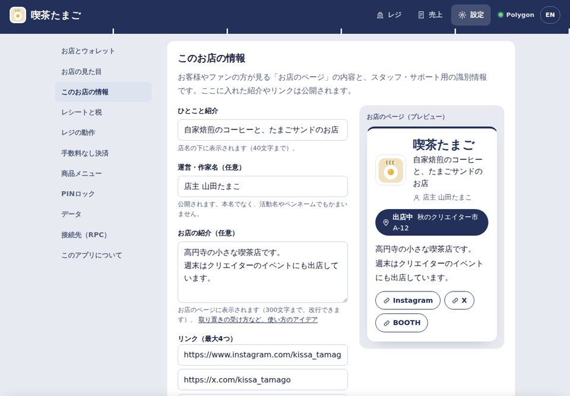
「このお店の情報」。右側に、お客様が見る「お店のページ」がそのまま表示されます。
イベントが終わったら「イベント出店」の欄を消して保存してください。消し忘れると、次のお会計やレシートにも出店情報が出てしまいます。
10お店のページと店頭POP
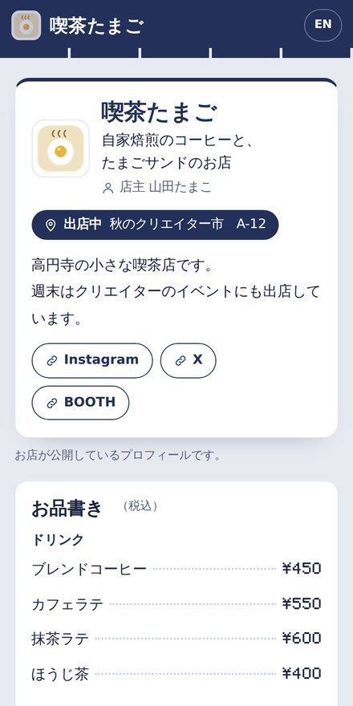
お店のページ（お客様のスマホ）。紹介、出店情報、リンク、お品書き、その端末のレシートが並びます。
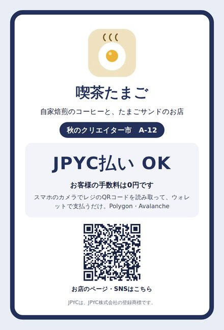
店頭POP。はがきサイズ（100×148mm）に収まります。
お客様がお店のページを開く方法
- お支払い完了画面の「お店のページを見る」
- 電子レシートの「お店のページ」と、保存したレシートの一覧の上に並ぶお店のボタン
- 店頭POPのQRコードや、「このお店の情報」の「リンクをコピー」「共有」で送ったリンク（SNSやLINEのプレビューにはRejiの共通の画像が出ます。お店のロゴは、ページを開くと表示されます）
店頭POPの印刷
「このお店の情報」→「店頭POPを印刷」。はがき用紙のほか、A4に印刷して切り取ってもかまいません。
「お客様の手数料は0円です」は、手数料なし決済が使えるときだけ印刷されます。使えないときは「決済手数料はかかりません（少額のネットワーク手数料のみ）」になります。
POPのQRコードで支払いはできませんPOPのQRコードは、お店のページを開くためのものです。お支払いには、毎回レジに表示されるQRコードを使います。
10宛名つきの領収書と、識別情報
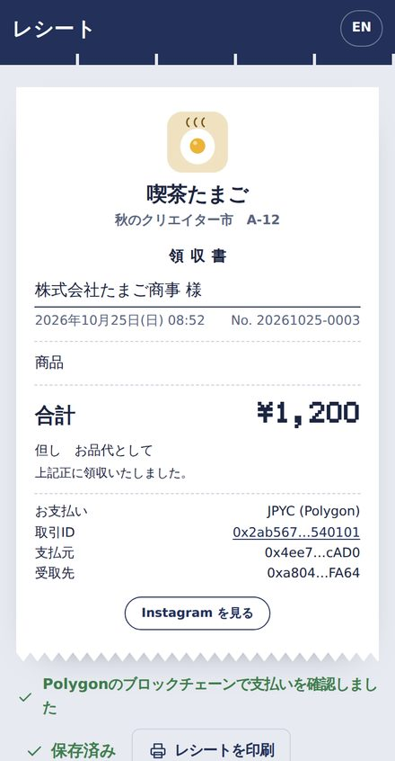
宛名と但し書きを入れた領収書（お客様のスマホ）。
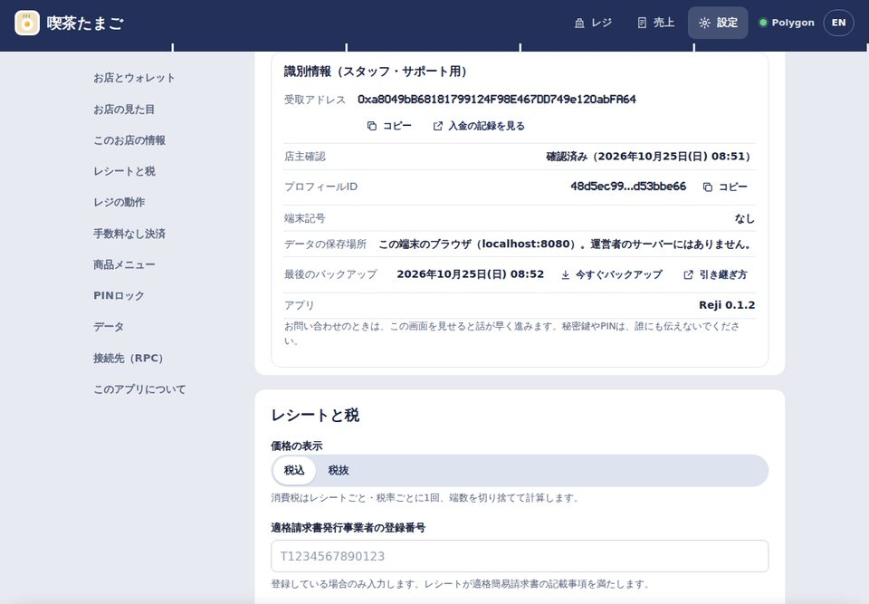
「このお店の情報」の下の方：識別情報（スタッフ・サポート用）。
「領収書をください」と言われたら
電子レシートの「宛名・但し書きを入れる（領収書）」から、お客様ご自身で宛名（会社名やお名前）と但し書き（最初は「お品代」）を入れられます。「〇〇 様」「但し お品代として」「上記正に領収いたしました。」が入った領収書になり、印刷やPDF保存もできます。宛名はお客様のスマホの中だけに保存され、お店には送られません。
識別情報（スタッフ・サポート用）
受取アドレス（「入金の記録を見る」で、ブロックチェーン上の入金を確かめられます）、店主確認、プロフィールID、端末記号、データの保存場所、最後のバックアップが一目でわかります。お問い合わせのときは、この画面を見せると話が早く進みます。バックアップが古いときは「今すぐバックアップ」を押してください。
伝えてはいけないもの秘密鍵（ガス用ウォレットのものを含む）とPINは、サポートを名乗る人にも絶対に伝えないでください。識別情報の画面には、伝えてはいけないものは出ていません。
10応援（投げ銭）を受け付ける
お店のページの下の方に、控えめな「このお店を応援する（任意）」を出せます。お客様やファンが、JPYCを直接お店のウォレットに送れます。お会計の画面や店頭POPには出ません。Rejiは手数料を受け取らず、お金を預かることもありません。
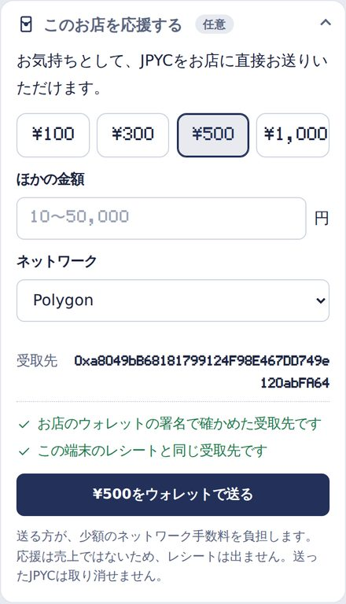
お店のページの「このお店を応援する」（開いたところ）。
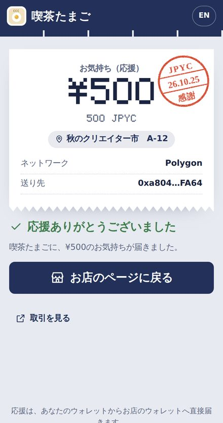
送ったあと。「感謝」のはんこが押されます。
受け付けるには
- 「設定」→「このお店の情報」→「応援（投げ銭）」で「店主の署名をして、応援を受け付ける」を押します。
- 受取アドレスのウォレットで署名します（このブラウザのウォレット、またはスマホでQRコードを読み取り）。
- 「受け付けています」と出たら完了です。やめるときは「応援の受け付けをやめる」を押します。
安全のためのしくみ
- お客様のスマホは、受取先がお店のウォレット自身の署名で確かめられたものかを確認します。ほかの受取先が書かれたリンクからは送れません。
- そのスマホにお店のレシートがあれば、レシートと同じ受取先かどうかも表示します。
- 応援には目に見えないしるしが付くため、お会計中に同じ金額の応援が届いても、売上と取り違えません。
- 受取アドレスを変えると、応援は自動で止まります。もう一度署名すると再開します。
知っておくこと応援は売上に含まれず、レシートも出ません。届いた応援は、ウォレットか「入金の記録を見る」で確かめてください。送る方が少額のネットワーク手数料を負担し、送ったJPYCは取り消せません。商品やサービスの代金を応援として受け取らないでください。税金の扱いは、税理士などの専門家にご確認ください。
10店長・管理者向け：接続先（RPC）
Rejiは、お店のタブレットから直接、ブロックチェーンの無料の公開ノード（RPC）につないで入金を確認します。運営者のサーバーは通りません。通信はお店ごとに別々なので、ほかのお店が混んでいても影響を受けません。ふつうは設定不要です。
自動で行っていること
- 速いノードを選び、分散して使う：チェーンごとに4〜5か所の公開ノードを持ち、速くて空いているところを選びます。
- 混雑・故障したノードは休ませる：「混雑（アクセス制限）」「応答なし」「遅れ」のノードは、しばらく使わずに別のノードに切り替え、時間をおいて自動で戻します。
- 返事が遅いときは、別のノードにも同時に聞く：一番早い答えを使うので、1か所が遅くてもお会計は止まりません。
- 入金は2か所で確かめる：入金を見つけたら、別の運営元のノードでも同じ取引があるか確かめてから「入金済」にします。1つのノードの誤りや不正だけで「入金済」になることはありません。
状態の見かた
「設定」→「接続先（RPC）」に、受け付けているチェーンごとの状態が出ます。緑＝良好、黄＝1か所だけ応答（専用の接続先の追加をおすすめ）、赤＝応答なし（インターネット接続を確認）。チェーン名を押すと、ノードごとの状態が見られます。「今すぐ確認」で最新の状態に更新します。
公開ノードだけで足りる目安1台のレジの通信は、請求画面を表示している間でも1秒に1回程度です。ふつうのお店（1日に数十〜百件程度のお会計）なら、公開ノードだけで足ります。お客様がとても多い、同じ場所で何台もレジを使う、スマホ回線（テザリング）で営業する場合は、次のページの「自分専用の接続先」をおすすめします。
10接続先（RPC）：自分専用の接続先を追加（任意）
無料アカウントで作れる専用の接続先を追加すると、混雑の影響を受けにくくなります。専用の接続先は優先して使われ、つながらないときは公開ノードに自動で戻ります。
- サービスを選ぶ「設定」→「接続先（RPC）」→「自分専用の接続先を追加（任意）」を開き、dRPC・Alchemy・Infura のどれかを選びます（QuickNode などは「その他（URL）」）。
- 無料登録してAPIキーをコピーする「○○の無料登録ページを開く」から登録し（メールアドレスやGoogleアカウント）、ダッシュボードに表示される「APIキー」をコピーします。「その他」の場合は、接続先のURL（https://…）をコピーします。
- 貼り付けて「追加」を押すRejiが、そのキーで使えるチェーン（Polygon など）を自動で確かめて追加します。追加された接続先は一覧に「自分用」と表示され、「削除」でいつでも外せます。
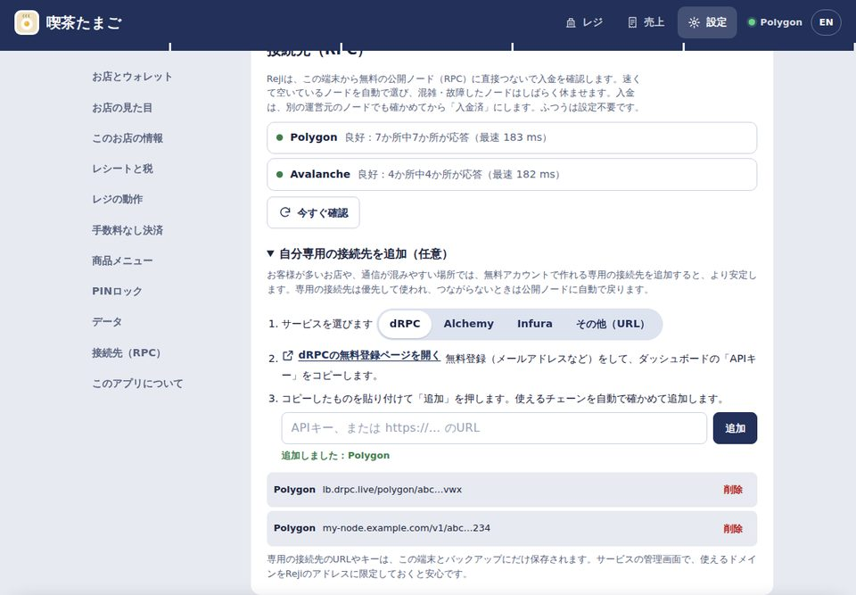
「接続先（RPC）」：チェーンごとの状態と、自分専用の接続先の追加。
APIキーの扱いAPIキーはこのタブレットとバックアップファイルにだけ保存され、ほかの人や運営者には送られません。サービスの管理画面で「使えるドメイン」をRejiのアドレスに限定しておくと、キーが知られても他で使われにくくなります。
11手数料なし決済（ガスレス）
お客様がPOL（手数料）を持っていなくても、JPYCだけで支払えるしくみです。Polygonで使えます。手数料はお店が自分で用意する「ガス用ウォレット」から支払われ、運営者やサーバーは関わりません。
しくみ
- お客様はウォレットで「署名」するだけ「この金額のJPYCをこのお店に送ります」という内容に署名します。お客様に手数料はかかりません。
- 署名がお店のレジに届く署名は、Nostrという公開の通信網を通って、請求を表示しているレジに届きます。
- レジのガス用ウォレットが送信するレジは、画面の請求と金額・宛先がぴったり合う支払いだけをブロックチェーンに送り、手数料（POL）を支払います。
- JPYCはお客様からお店へ直接届くガス用ウォレットはJPYCに触れません。入金の確認は通常の支払いと同じです。
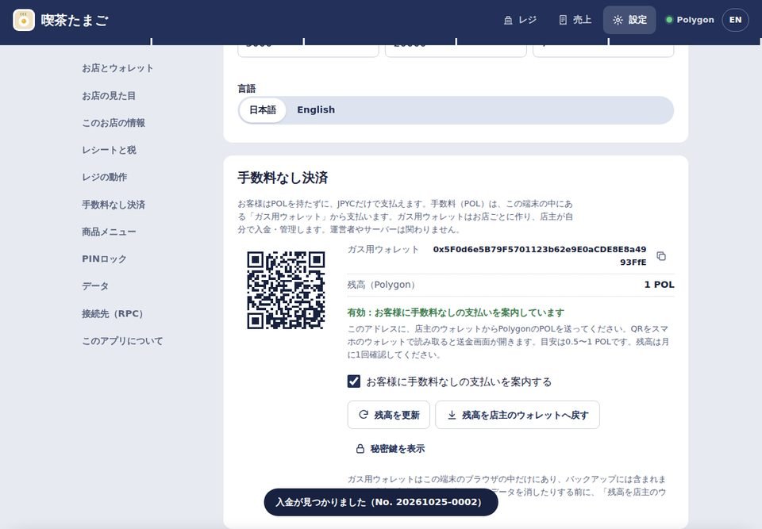
設定 →「手数料なし決済」：ガス用ウォレットの入金用QR、アドレス、残高、状態が表示されます。
11手数料なし決済（つづき）
はじめる手順（店長）
- 店主確認をするまだの場合は、第10章の手順で店主確認をします。
- 「ガス用ウォレットを作る」を押すこのタブレットの中に、手数料の支払い専用のウォレットが作られます。売上はここには入りません。
- POLを入れる店主のスマホのウォレットで、表示されたQRコードを読み取ると送金画面が開きます。Polygon（テストモードではAmoy）のPOLを0.5〜1 POLほど送ります。
- 状態が「有効」になったことを確認する「お客様に手数料なしの支払いを案内する」にチェックが入っていれば、次の請求から手数料なしで支払えます。
ふだんの管理
- 残高の確認：月に1回（忙しいお店は週に1回）、「残高を更新」で確認します。残高が0.02 POLを下回ると、お客様には自動で通常の支払い（手数料あり）が案内されます。
- 残高を戻す：使わなくなったとき・端末を交換するときは、「残高を店主のウォレットへ戻す」を押し、店主の署名をします。
- オフにする：「お客様に手数料なしの支払いを案内する」のチェックを外して保存すると、通常の支払いだけになります。
ガス用ウォレットはこのタブレットの中だけガス用ウォレットの秘密鍵はこのタブレットのブラウザの中だけにあり、バックアップには含まれません。ブラウザのデータを消したり、「すべて消去」をしたりすると失われます。その前に必ず残高を戻してください。入れておくのは手数料分の少額のPOLだけにします。
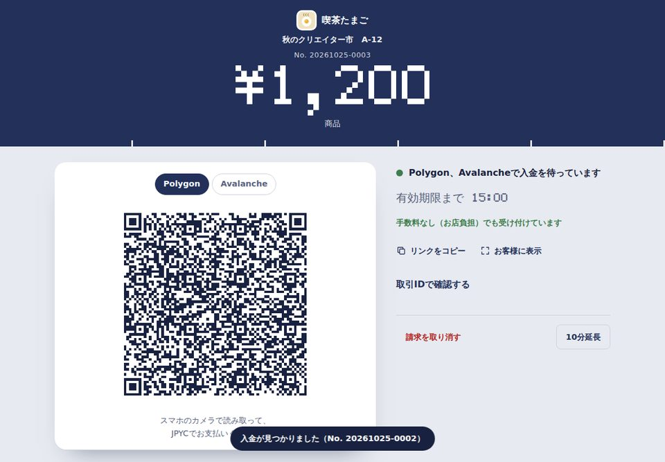
請求画面に「手数料なし（お店負担）でも受け付けています」と表示されます。
スタッフが知っておくこと手数料なしの支払いは、請求画面を表示しているこのレジが送信します。お客様が支払い終わるまで、請求画面を閉じたり、タブレットをスリープにしたりしないでください。うまくいかないときは、お客様の画面で自動的に通常の支払いへ切り替わります（第7章）。
11手数料なし決済：ガス用ウォレットQ&A
お店の方や、ウォレットにくわしい方からよくいただく質問です。ガス用ウォレットは、売上を入れる金庫ではなく、手数料を払うための「釣り銭」として設計しています。
| 質問 | 答え |
|---|
| ガス用ウォレットとは？ | お客様が手数料なしで払えるように、ネットワーク手数料（POL）をお店が代わりに払うための小口のウォレットです。レジの「釣り銭」のようなもので、売上（JPYC）は入りません。売上は、お店の受取ウォレットに直接届きます。 |
| 誰が管理しているの？ | お店自身です。鍵はお店の端末の中で作られ、運営者は鍵を持っておらず、POLを動かすこともできません（Rejiにはサーバーがありません）。POLはお店が自分で入れ、店主の署名でいつでも店主のウォレットに戻せます。 |
| なぜバックアップに入らないの？ | バックアップのファイルは、AirDrop・メール・LINE・クラウドなどで持ち運ばれ、あとに残りやすいためです。お金を動かせる鍵を入れないことで、ファイルがほかの人の手に渡っても資金は守られます。 |
| 端末が壊れたら？ | 中のPOLは失われますが、入れておくのは少額なので、損失はその範囲に限られます。新しい端末で作り直せば、すぐに使えます。復元できるようにしたい場合は、店主の署名のうえで鍵を表示し、紙などオフラインで保管できます（保管はお店の責任です）。 |
| いくら入れておけばいい？ | 手数料分の少額だけです。1 POL程度でも、多くの支払いをまかなえます（ネットワークの混み具合によります）。使わない期間は、店主のウォレットに戻しておくと安心です。 |
| 気をつけることは？ | ブラウザのデータを消す・「すべて消去」をする・ブラウザを削除する前に、必ず残高を戻します。iPhone・iPadでは、Rejiをホーム画面に追加して使います（Safariは、しばらく開かないサイトのデータを自動で消すことがあります）。レジの端末は、拡張機能を入れていないブラウザで、PINロックをかけて使います。 |
| 法令との関係は？ | Rejiの運営者は、お客様やお店の資産や鍵を預からず、送金の仲介もせず、手数料も受け取りません。お店ごとの取り扱い（会計・税務・法令の確認など）は、必要に応じて専門家にご相談ください。 |
12セキュリティのルール
- 秘密鍵・シードフレーズを扱わないお客様にも、店のウォレットについても、聞かない・入力しない・写真に撮らない・人に伝えない。Rejiは一切必要としません。「サポートです」と名乗る人に聞かれても答えません。
- 入金はレジ画面で確認する商品を渡す判断は、必ずレジの「入金済」表示で行います。お客様のスマホ画面やスクリーンショットでは判断しません。
- 受取アドレスを変更しない設定の「受取ウォレットのアドレス」は店長だけが変更します（店主確認をしている場合、変更には店主のウォレットでの署名が必要です）。誰かに頼まれても変えません。
- PINを共有しないPINを他人に教えたり、タブレットに貼ったりしません。
- 知らないリンクやQRを開かないお店のタブレットで、関係のないサイトやQRコードを開きません。
- タブレットを放置しない離れるときは売上画面などを閉じ、必要なら「今すぐロック」を使います。
- テストモードで営業しない黄色いしま模様の帯が出ていたら、店長に連絡します。
- 赤い帯が出たらお会計を止める「受取アドレスの設定が店主の署名と一致しません」は、設定が書き換えられた可能性を示します。すぐに店長に連絡します。
- お客様にはレジの画面のQRだけを読んでもらう店内に貼られた見覚えのないQRコードや、他の人から送られた支払いリンクは使わないよう案内します。
- レジ専用のブラウザで使うレジのタブレットには、不要なブラウザ拡張機能やアプリを入れません。拡張機能は、画面の内容や保存データを読める場合があります。
データの保存場所売上・商品・設定は、このタブレットのブラウザの中だけに保存されています。外部のサーバーには送られません。そのため、ブラウザのデータを消すと売上記録も消えます。バックアップは店長が定期的に行います。
13用語集
| 用語 | 意味 |
|---|
| JPYC | 日本円建ての電子決済手段。1 JPYC＝1円として扱います。 |
| ウォレット | JPYCなどを保管・送金するアプリ（HashPort Wallet、MetaMask など）。お店にもお客様にもそれぞれあります。 |
| アドレス | ウォレットの受取先を表す「0x」から始まる42文字の文字列。銀行の口座番号のようなもので、公開しても問題ありません。 |
| 秘密鍵・シードフレーズ | ウォレットを操作するための暗証情報。知られると資産を盗まれます。絶対に扱いません。 |
| チェーン（ネットワーク） | JPYCが動いているブロックチェーンの種類。Polygon、Avalanche、Ethereum、Kaia など。同じJPYCでもチェーンが違うと別扱いです。 |
| POL／ガス代 | Polygonでの送金にかかるネットワーク手数料と、その支払いに使う通貨。 |
| 手数料なし決済（ガスレス） | お客様の代わりに、お店のガス用ウォレットがネットワーク手数料を払うしくみ（第11章）。 |
| ガス用ウォレット | 手数料の支払い専用に、レジの端末の中に作るウォレット。店主が少額のPOLを入れて管理します。 |
| 店主確認 | 受取アドレスのウォレットで署名して、そのアドレスが店主のものだと確認すること。送金も手数料もありません。 |
| RPC（接続先ノード） | ブロックチェーンの情報を読み書きするための窓口。Rejiは無料の公開ノードを自動で選んで使い、必要なら自分専用の接続先も追加できます（第10章）。 |
| Nostr（ノストル） | だれでも使える公開の通信網。手数料なし決済の署名や、スマホでの店主確認の署名をレジに届けるのに使います。 |
| 取引ID | 1回の送金を表す「0x」から始まる66文字の文字列（トランザクションハッシュ）。入金の確認に使います。 |
| 確認中／確定 | 支払いがブロックチェーンに記録されると「確認中」、その後いくつかのブロックが積み重なると「確定」になります。 |
| エクスプローラー | ブロックチェーン上の取引を誰でも確認できるウェブサイト（Polygonscan など）。 |
| テストモード | 無料のテスト用JPYCで練習するモード。本物のお金は動きません。 |
| 電子レシート | QRコードからお客様のスマホに保存できるレシート。支払いをブロックチェーン上で確認できます。 |
| 未入金 | 期限切れや取り消しで、入金が確認できなかった請求。「再確認」で遅れた入金を探せます。 |
付クイックリファレンス
お会計の流れ
1商品をタップ
2「¥○○ を請求」
3QRを見せる
4赤い「入金済」の印を確認
5レシート →「次のお会計」
困ったときの早見表
| こんなとき | まずこれ |
|---|
| 払ったのに画面が変わらない | 1分待つ →「取引IDで確認する」→ ダメなら店長 |
| 金額の違う入金 | 金額を確認 →「この入金を使う」（不足は店長に確認） |
| 期限切れ | 「10分延長」→ QRを読み直してもらう |
| 請求を間違えた | 「請求を取り消す」→ 直して再請求 |
| 後から払われた | 売上 → 未入金 →「再確認」 |
| 右上が赤い | Wi-Fi確認 → 少し待つ → 続けば店長 |
| 返金してほしい | レシート番号・支払元・金額・理由をメモ → 店長 |
| ネットにつながらない | お会計は続けられる → 確かめられないときは「あとで払ってもらう」 |
3つの約束
① 秘密鍵・シードフレーズは扱わない ② 入金はレジ画面の「入金済」で確認 ③ 黄色いしま模様（テストモード）で営業しない
お問い合わせRejiの使い方や不具合のご相談は、reji@mail.grokbot.com へお送りください。Rejiが、シードフレーズ（復元フレーズ）や秘密鍵をおたずねすることは絶対にありません。Rejiのサポートからのメールは、このアドレスからだけお送りします。取り置き・出張・2台目のレジなどの使い方は、サイトの「使い方のアイデア」のページにまとめています。